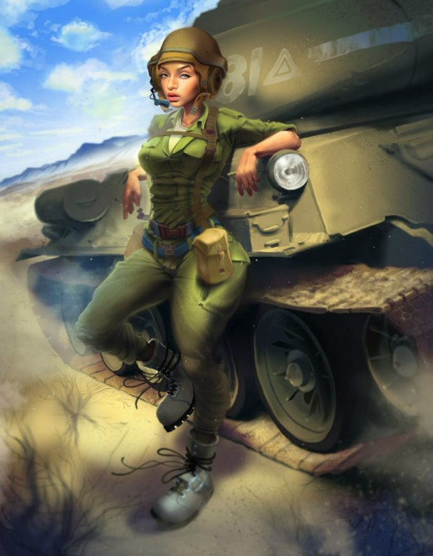

Литературный клуб "У Жужелицы"
Страница 7 из 11 •  1, 2, 3 ... 6, 7, 8, 9, 10, 11
1, 2, 3 ... 6, 7, 8, 9, 10, 11
Re: Литературный клуб "У Жужелицы"
автор argh в Вт 11 Авг 2015 - 20:57
И Шурик не полный аутист оказывается.
argh- Маргинал

- Сообщения : 374
Дата регистрации : 2015-06-12
Re: Литературный клуб "У Жужелицы"
автор peregarrett в Вт 11 Авг 2015 - 21:11
Песенку принес.argh пишет:Дзень добры, паважаны Макс.Как говорят у меня по месту проживания. Ну честное слово, только Дюрер и только его "Четыре всадника апокалипсиса", с моей точки зрения, могут описать этот штурмовой квартет.

peregarrett- Находка для шпиона

- Сообщения : 3264
Дата регистрации : 2014-09-07
Возраст : 36
Re: Литературный клуб "У Жужелицы"
автор argh в Вт 11 Авг 2015 - 21:25
Но слабоваты всё-таки будут. Не потянут все графические анонсы Макса. Так что, только Мор, Брань, Глад и Смерть. И все накинутся на маленькое порождение Бастет. (Эх Юля, Юля... Прости нас, сама виновата)
argh- Маргинал
- Сообщения : 374
Дата регистрации : 2015-06-12
Re: Литературный клуб "У Жужелицы"
автор BlackDoomer в Вт 11 Авг 2015 - 23:21
А "Файтер, клирик, вор и маг" вообще тему у Высоцкого стырили "Солдаты группы Центр".

BlackDoomer- Хикка

- Сообщения : 165
Дата регистрации : 2015-07-31
Откуда : СПб
Re: Литературный клуб "У Жужелицы"
автор Lansar_Skavana в Ср 12 Авг 2015 - 13:17

Lansar_Skavana- Хикка
- Сообщения : 211
Дата регистрации : 2015-04-12
Re: Литературный клуб "У Жужелицы"
автор argh в Ср 12 Авг 2015 - 22:08
argh- Маргинал
- Сообщения : 374
Дата регистрации : 2015-06-12
Re: Литературный клуб "У Жужелицы"
автор argh в Ср 12 Авг 2015 - 23:09
- Всё как у нЕлюдей:
Поздний вечер. Женщина открывает дверь подъезда, медленно идёт к лифту. Смотрит на экран информационного табло – «11 этаж», нажимает кнопку вызова. Оглядывается на ряды почтовых ящиков, на табло и решает проверить свой. Что такое сейчас почтовый ящик – атавизм. Газеты никто практически не выписывает, писем, а уж тем более поздравительных открыток, не пишут. Одни рекламные буклеты. Так и есть. «Распродажа», «Распродажа», «Только 2 дня», «Приглашаем посетить». Конверт из банка с очередным супер-предложением по кредиту. Ещё конверт. Адрес получателя надписан рукой, странно, обычно ведь печатают на принтере. Отправитель… Так это же от родителей. Женщина торопливо надрывает конверт, достаёт письмо.
«Здравствуй, Лена. Тут такое случилось. По телефону почему-то испугалась о таком тебе сообщать да теперь ничего и не изменишь. В общем, Алиса умерла. Я когда тебе звонила в последний раз, её домой как раз отпустили из больницы, папу ещё попросили съездить за ней. Он вернулся когда, на нём лица не было. Знаешь же, как он к водке относится, а тут открыл бутылку, выматерился, налил стакан и залпом выпил. Потом до ночи по квартире метался, ругался. Насилу успокоила. Проходит два дня – тетя Вера прибегает, кричит что Алиска попала под машину, грузовую. Когда нас вызывали в милицию, сказали, что это было самоубийство. Отцу показали видео с какой-то камеры наблюдения. Говорит, что стояла, стояла на переходе, несколько раз уже зелёный загорался, а потом как на красный кинется под колёса грузовика. Похоронили её 19, рядом с родителями и дочкой.
Вот такие новости. Мама»
Задрожали руки, на письмо упали несколько слезинок.
«Когда этот звонок был? Девятого? Нет, десятого. Точно десятого. Тогда что же получается – двенадцатого? Чёрт – уже и 9 дней прошли. Эх, мама. Испугалась она. Ну разругались мы с ней тогда, так это уже сколько лет прошло, да и простила я её, а уж когда Варечку хоронили…»
Лифт пришлось вызывать снова. Как сомнамбула зашла в него, ткнула не глядя этаж. Двери закрылись. Долго искала ключ от входной двери в сумке, пока не вспомнила, что положила его в карман плаща, когда начала читать письмо. Дрожали руки. Не сразу попала ключом в скважину. Наконец зашла в квартиру, бросила сумку у входа. Не разуваясь пошла к письменному столу, выдвинула ящик и достала поблёкшую цветную фотографию. Последняя школьная линейка. Посредине стоит высокий парень, по правую руку я, специально причёску делала в парикмахерской. По левую огненно-рыжая, с озорными хвостиками, Алиска. Улыбаемся. Кто же знал, что так жизнь сложится.
Села за стол и долго смотрела на фотографию. Потом аккуратно её согнула, чтобы осталась одна Алиса, поставила. Сходила за рюмками, заглянула в холодильник – только початая бутылка красного вина. Ну что же... Налила в рюмки, одну ей, одну мне. Выпила.
Сколько просидела вот так за столом, не помню. Показалось что засыпаю – прилегла на диван. Лежала и смотрела на фотографию, вспоминала, думала. Иногда, наверно, засыпала на несколько минут, тогда воспоминания дополнялись образами. Наше возвращение из «Совёнка», как мы с Семёном обустраивались на съёмной квартире. Я заканчиваю десятый, он работает и учится на вечернем. Последняя линейка, где нас сфотографировал одноклассник, но до этого минут десять пришлось уговаривать Алиску. Как она смутилась на выпускном, когда Семён пригласил её на танец. Наша с Семёном свадьба и пьяная, заплаканная Алиса в ресторане. Рождение сына – Мишеньки.
Когда же всё началось, как я не заметила? А ещё говорят про женскую интуицию. В 92-м? Неспокойное время, безденежье постоянное. Семён решает заняться бизнесом. Заводит какие-то дела с Алисиным отцом. Начинаются непонятные командировки, постоянно где-то пропадает. Вечер 3 мая 1994 года. Я забираю Мишу из детсада и идём домой. У подъезда видим Семёна. Он к нам подходит, протягивает мне пачку купюр и говорит «Я ухожу». И последующий год чёрной депрессии, если бы не сын, то, наверно, поступила бы как Алиса. Скандал, который я устроила в консультации, когда встретила там Семёна и беременную Алису. С того дня я её восемь лет не видела. Только обрывки сплетен во дворе, потом статьи в газетах (сначала местных, затем и в центральных, а там и до «жёлтых» ход дошёл), несколько раз Семён мелькал на телевидении. И слухи, слухи. Пропал один из его конкурентов. Убили ещё одного. Обанкротился третий. В непонятной автокатастрофе гибнут родители Алисы, и Семён становится единственным владельцем компании. Компания растёт, перебирается в Москву. И наконец, смерть Вари. По официальной версии – несчастный случай дома, запнулась на лестнице, разбила голову. И слухи – пьяный Семён решил пострелять по вазам, девочка испугалась, побежала и попала под шальную пулю. Похоронить дочку Алиса решила в родном городе, когда я пришла на кладбище, то увидела, что она была там одна. Заметив меня, бросилась мне на встречу, обняла и принялась сумбурно говорить, то просила прощения за прошлое, то обвиняла Семёна, говорила о дочке. Два дня Алису не могли увести с могилы, потом приехала «скорая» и забрала её в психушку. С тех пор я её не видела, сначала переехала в Краснодар, проработала там 3 года, предложили должность в Москве, согласилась. Сын вырос, поступил в МГУ, теперь по программе обмена стажируется в Германии.
Воспоминания, воспоминания… А ведь считала, что забыла его. Даже когда в газетах видела его фамилию, ни разу сердце не ёкнуло. Какой-то Персунов, куда-то поехал, вернулся, судится, открывает, банкротит. Там он с одной актрисской, тут с какой-то новоявленной фотомоделью. Так, средненькая такая акула, в мутном бизнесе. Не забыла оказывается. И больше того – НЕНАВИЖУ. Как можно было превратиться в такое чудовище? Что с тобой произошло? И родился план. Мести. За всё, за всех. Если я вытянула его сюда, то мне и отправить его обратно, в небытие.
Следующий день постаралась провести как обычно. Работа, обсудила с бухгалтерией их отчёты, нашла несколько ошибок, поговорила о планах на выходные, что не плохо было бы выбраться всем отделом на природу. И, спасибо интернету, нашла: с кем Семён сейчас судится (какой-то господин Платонов, директор концерна «БФК», и суд Платонов, скорее всего, выиграет), где любит обедать, с кем роман крутит. Позвонила ему в офис. Сказала секретарю, что работала в «БФК» и у меня есть информация, которая возможно заинтересует господина Персунова. Тот тут же взял трубку, предложила ему встретиться и передать, за определённое вознаграждение. Но только чтобы меня не видели посторонние. Договорились встретиться завтра в гостинице «Вега», где их компанией выкуплено несколько номеров, в 9 вечера. Администратор мне скажет в каком.
Суббота. С утра позвонила коллеге по работе, тот давно клинья подбивал, пригласила к себе в 6 вечера. Вечером, без прелюдий, потянула его в спальню. Потрахались. Прогнала его. Затем оделась, накрасилась, из шкатулки с бижутерией взяла прощальный подарок Мику – длинную, широкую, плоскую, крепкую металлическую шпильку, с очень острым кончиком. Тогда в лагере она, хихикая, рассказала, что вот как её мама экипировала для поездки в Союз, отбиваться от мальчишек, если будут приставать. Вставила шпильку в волосы и вышла из квартиры.
В гостинице мне сказали, что господин Персунов находится в 411 номере на 4 этаже. Улыбнулась, узнав об этом. Что же Семён, ты сюда прибыл на 410 рейсе, ну а назад отправишься на 411. Вот только напитков тебе не предложат.
Перед номером надела солнечные очки, постучала в дверь. Дождавшись предложения войти – зашла, опустив голову. Семён вальяжно сидел в кресле, потягивая виски. Теребя ручку сумочки, с дрожью в голосе начала говорить, что работала в «БФК», экономистом, обвинили в каких-то просчётах, уволили, теперь без денег и без работы. Есть копии нескольких документов, которые вас заинтересуют. А он слушал и улыбался. Он не узнал меня! Мой голос! Попросила стакан воды. Пока он ходил к столику, открывал бутылку минералки, наливал её в стакан, я сняла плащ, очки, вытащила шпильку из волос и пошла к нему. А когда Семён повернулся ко мне, всадила шпильку ему в горло. Он захрипел, схватился ладонью за шею, попытался крикнуть, но изо рта пошла кровь. И вот только теперь он узнал меня, недоумение в глазах сменилось испугом. Я ударила его в живот, один раз, второй. Забыла всё, что хотела сказать, только повторяла «За Алиску, за Варю, за меня». Он упал, согнулся, одну руку так и держал у шеи, второй схватился за живот. А я стояла и смотрела, как он истекает кровью. Наконец он затих. Тогда я стянула с него брюки, трусы, разорвала на себе блузку, бельё, смяла плед на диване. Содрогаясь от омерзения, поёрзала на его члене, чтобы испачкать его «подарком» от коллеги. Постояла ещё минут десять и позвонила в милицию. Сказала, что меня изнасиловали, и я убила насильника.
- Окончание №1. Вероятность близка к 1:
Завтра мне вынесут приговор. Оказывается, в номере была установлена видеокамера. И моя версия об изнасиловании продержалась 2 часа. Я не стала искать хорошего адвоката, воспользовалась услугами госзащитника. По его словам, прокурор будет настаивать на максимуме – 15 лет. Чтобы другим неповадно было в «Робин Гуда» играть. 15, так 15. Я выдержу, обязательно должна выдержать.
- Окончание №2. Вероятность близка к 0:
Мне дали 3 года условно. Слишком многим Семён перешёл дорогу. Следствие провели абы как, даже на генетическую экспертизу ничего не стали сдавать, ничего не спрашивали о нашем с ним прошлом. Квалифицировали как убийство в состоянии аффекта. Их теперь интересовало только, как бы побольше урвать от его бизнеса. А я теперь должна попытаться объяснить сыну, когда он приедет на каникулы, почему так поступила с его отцом.
argh- Маргинал
- Сообщения : 374
Дата регистрации : 2015-06-12
Re: Литературный клуб "У Жужелицы"
автор peregarrett в Пн 17 Авг 2015 - 3:50
А вот вдруг бы там внезапно Шурик был...
peregarrett- Находка для шпиона
- Сообщения : 3264
Дата регистрации : 2014-09-07
Возраст : 36
Re: Литературный клуб "У Жужелицы"
автор peregarrett в Пн 17 Авг 2015 - 3:54
Вот Виола, потягивающая вискарь мне нравится. А сигару ей не положено?
peregarrett- Находка для шпиона
- Сообщения : 3264
Дата регистрации : 2014-09-07
Возраст : 36
Re: Литературный клуб "У Жужелицы"
автор peregarrett в Пн 17 Авг 2015 - 3:57
peregarrett- Находка для шпиона
- Сообщения : 3264
Дата регистрации : 2014-09-07
Возраст : 36
Re: Литературный клуб "У Жужелицы"
автор peregarrett в Пн 17 Авг 2015 - 4:00
peregarrett- Находка для шпиона
- Сообщения : 3264
Дата регистрации : 2014-09-07
Возраст : 36
Re: Литературный клуб "У Жужелицы"
автор Chess в Пн 17 Авг 2015 - 4:33

Chess- Находка для шпиона
- Сообщения : 3798
Дата регистрации : 2014-10-05
Откуда : Город на краю света
Re: Литературный клуб "У Жужелицы"
автор argh в Пн 17 Авг 2015 - 18:37
Рыжевская на этих высотах
- Спойлер:

argh- Маргинал
- Сообщения : 374
Дата регистрации : 2015-06-12
Re: Литературный клуб "У Жужелицы"
автор argh в Пн 17 Авг 2015 - 19:13
И уж очень длинный список, чтобы перечислять кто не тот кем кажется.
argh- Маргинал
- Сообщения : 374
Дата регистрации : 2015-06-12
Re: Литературный клуб "У Жужелицы"
автор argh в Пн 17 Авг 2015 - 19:21
argh- Маргинал
- Сообщения : 374
Дата регистрации : 2015-06-12
Re: Литературный клуб "У Жужелицы"
автор dobrii_malii в Пн 17 Авг 2015 - 22:44
Что, даже Семён? Неужели и он там чего-то стоит?Макс Ветров пишет:Хотя там все не те, кем кажутся.

dobrii_malii- Хикка
- Сообщения : 156
Дата регистрации : 2015-05-30
Re: Литературный клуб "У Жужелицы"
автор argh в Пн 17 Авг 2015 - 22:49
Максим сильно не обижайся. Вот такие у меня шутки.
argh- Маргинал
- Сообщения : 374
Дата регистрации : 2015-06-12
Re: Литературный клуб "У Жужелицы"
автор dobrii_malii в Пн 17 Авг 2015 - 22:55
Я полагаю, Славя тоже не так проста. Похоже, в следующей главе она будет представлена во всей красе. Во всех смыслах.argh пишет:Славя.
dobrii_malii- Хикка
- Сообщения : 156
Дата регистрации : 2015-05-30
Re: Литературный клуб "У Жужелицы"
автор argh в Пн 17 Авг 2015 - 23:50
Может Сёма окажется реинкарнацией настоятеля монастыря Шаолиня. Он Машку как муху лёгким щелчком в бетон вобьёт. А Славя вспомнит, что она внучатая племянница королевы Виктории (английской, зря что ли рисунок ты выкладывал) и не комильфо яшкаться с солдатнёй. Даже такой фигуристой.
argh- Маргинал
- Сообщения : 374
Дата регистрации : 2015-06-12
Re: Литературный клуб "У Жужелицы"
автор BlackDoomer в Вт 18 Авг 2015 - 0:11
Судя по некоторым закидонам, например, с озером - ведьма. Не? А то, как отсыл к "Травнице", где она в центральной роли.dobrii_malii пишет:Я полагаю, Славя тоже не так проста.
BlackDoomer- Хикка
- Сообщения : 165
Дата регистрации : 2015-07-31
Откуда : СПб
Re: Литературный клуб "У Жужелицы"
автор peregarrett в Вт 18 Авг 2015 - 2:39
Макс Ветров пишет: Хотя...иногда бывает такое нездоровое желание - потягаться с гуру этого дела
Щас меня еще на состязание вызовут, а я без оружия пришел.
peregarrett- Находка для шпиона
- Сообщения : 3264
Дата регистрации : 2014-09-07
Возраст : 36
Re: Литературный клуб "У Жужелицы"
автор Chess в Вт 18 Авг 2015 - 2:40
Расчехляй!peregarrett пишет:Макс Ветров пишет: Хотя...иногда бывает такое нездоровое желание - потягаться с гуру этого дела
Щас меня еще на состязание вызовут, а я без оружия пришел.
Chess- Находка для шпиона
- Сообщения : 3798
Дата регистрации : 2014-10-05
Откуда : Город на краю света
Re: Литературный клуб "У Жужелицы"
автор peregarrett в Вт 18 Авг 2015 - 16:54
Не, ну это уже не юри получится, это яой будет. Максимум - обычный хентай, это если демоны женского полу будут.Макс Ветров пишет:НЕТ!!! Юри - зло!!! Не соблазните, демоны!!!:
peregarrett- Находка для шпиона
- Сообщения : 3264
Дата регистрации : 2014-09-07
Возраст : 36
Re: Литературный клуб "У Жужелицы"
автор argh в Ср 19 Авг 2015 - 22:36
Продолжение истории, начатой http://bl7dl.2x2forum.ru/t84p210-topic#14981
- Спойлер:
- Разрешите, господин Куратор?
- А-а, Младший Летний Наставник. Заходите.
- Извините, но я Летний Наставник.
- Вот, ознакомьтесь с приказом. Теперь Младший Летний Наставник да ещё к тому же с испытательным сроком. И это самое лучшее из того, что можно было бы сделать. Вот расскажите, пожалуйста, что это такое?
- Моя объяснительная и заявка в отдел «Хронокоррекции».
- Это ваша восьмая объяснительная и семнадцатая заявка «хроникам»! Помимо этого, мне на вас пришли: докладная от отдела «Зачистки», жалоба от медицинского отдела, две кляузы от ваших работников, что вы не даёте им работать, ставите под сомнение их квалификацию, жалоба от директора «Санаторного питания». В конце концов, мне Старший Техник утром рассказал анекдот про вас, не беспокойтесь, не смешной, до смешных, слава Ментору, вы ещё не доработали. Сможете, как-нибудь, это пояснить?
- Нет. Не буду тратить ваше время впустую. Тем более что наверняка, по мне уже вынесено решение.
- Да. Вы правы. Вам даётся последняя попытка. В случае неудачи вас разжалуют в Воспитатели, переведут на Новую Землю. Ну, а в случае успеха – будете опять Летним Наставником. Старший Наставник вспомнил, как вручал вам диплом с отличием, ознакомился с тем как у вас идут дела. И эта попытка – его подарок вам.
- Ясно. Спасибо. Разрешите идти?
- Да. До свидания.
Итак, Семён. С чего начнём? Со всего сразу или по частям будем ампутировать? А может тебя в шахту уронить и устроить случайное подтопление грунтовыми водами? А вы батенька изверг. Ну, прямо уже и изверг. Нервишки шалят, шалопуты эдакие. Был я на этой Новой Земле. Юристам экскурсии по тюрьмам устраивали, а нас, педагогический факультет, как-то на эту НЗ вывезли. Нет, туда я больше не ездок. Не нужна мне «Наставничья доблесть», хоть и первой степени, но посмертно. Как же тебя растормошить и купировать твоего двойника? Может попробовать тебя в другую эпоху перенести? Например, какое-нибудь в меру дикое Средневековье, в подобие Англии. В детстве, если верить данным по тебе, Вальтера Скотта почитывал. Попробовать примерный план набросать что ли…
- Летний Наставник?
- Теперь уже Младший. А вы кто?
- Скажем так, Наблюдатель. Приставлен к вам по распоряжению Старшего Наставника, неофициально. Что пишите?
- Поздний советский период не пошёл, думаю кардинально поменять время действия, примерную легенду местности вот составляю.
- Разрешите-ка ознакомиться.
…
- Летний! У вас что, от стресса фантазия с сумасшествием диффундировали? Откуда у вас эта чушь? Первый вопрос. А на каком языке они будут разговаривать? На русском? Или для начала предлагаете провести минимальный годичный курс староанглийского. А нравы предполагаются также соответствующие эпохи? Публичные порки, позорный столб, виселица, как профилактика практически любого преступления? Ладно, об этом потом, посмотрим пока антураж и героев.
- Так, что мы имеем. Замок – 1 штука, амбар – 3 штуки, сад, баня (ну очень свойственно для Англии), лес, озеро. Малый джентльменский набор. Так, дальше герои…
- Хозяин замка в крестовом походе – это ладно. А зачем вам его путешествие в Хольмгард? Придумали же…
- Хольмгард – так называл…
- Да знаю я, кто, когда и почему так назвал Новгород и почему нельзя так его называть. По-другому Славяна у вас в историю не вводилась? Вы, надеюсь, помните, как раб переводится на английский? И вот у нас любимую дочь хозяина замка зовут Славей. А эта, еле выговоришь, Хельга Дмитрийсдоттир – она-то, зачем вам нужна? Ну, хотите сделать её «серым» кардиналом, делайте. Но Дмитрийсдоттир.… Это даже не знаю, как назвать. Как будто начинающий переводчик решил поработать, что вижу, то слово в слово и перевожу.
- Чудики учёные, Каббала, голем… Пёс с ним, может быть, но на душе муторно.
- Лена у нас монахиня? Приехала решать вопрос с десятиной? Да не могли её отправить с такой миссией. Будь постарше, максимум, может быть, приставили бы к Славе преподавать Катехизис. И чем у нас Лена в замке занимается? Следит за учёными, подозревает в ереси и вот-вот настучит в Инквизицию. Принесите воды, пожалуйста. Надо немного успокоиться.
- Что! Женя опять день-деньской спит? И опять в библиотеке? Как будто человека больше нечем занять. Ой, Ментор спаси и сохрани, «Алиса из Локсли», «Малышка Уль»? Нет, я точно Психиатра вызову. Вы сегодня как, выспались? «Отбивающие парней у блондинок и отдающие рыжим». Каким рыжим? Парням, коням, а нет, наверно, всё-таки рыжим девушкам. Вот и сделали бы Женю шерифом местности, чтобы она этих разбойниц в первый же день вздёрнула на ближайшем дубе. И отсюда Летний проблема, вы рискуете большую часть героев потерять, причём безвозвратно, уже в первые пару дней. И будут Семёна перевоспитывать два пепелища, хотя я ещё не читал про Виолу, ну там Инквизиция и без Лены справится. И два синюшных, обоссаных висельника. Хотя Семён к тому времени точно будет с ободранной спиной прикован к столбу. А как же, первым делом он кого встречает? Славю. И не знает, что кланяться ей надо и отвечать на вопросы с первого раза.
- Плохо, Летний. Очень плохо.
- Вы бы ещё в фэнтези ударились. Поход к Одинокой Шахте, где живёт молодая нека. Живёт и охраняет Красный Кнопкинстон Трейна. Охраняет и злится. На себя, на работодателя. Ещё бы, ведь Аарон Соломонович Трейн был тем ещё шутником и редкостной сволочью. Посадил на эту кнопку включение вентиляции в отхожем месте, а всем рассказал, что откроется комната с сокровищами. С некой заключил контракт на 74 страницах мелким шрифтом и смотался, закрыв портал. И бедной девочке покоя не дают бродячие искатели приключений. А у неё уже от этих искателей изжога, того и гляди несварение желудка начнётся. Так что начали с СССР, им и заканчивайте. Думайте.
argh- Маргинал
- Сообщения : 374
Дата регистрации : 2015-06-12
peregarrett- Находка для шпиона
- Сообщения : 3264
Дата регистрации : 2014-09-07
Возраст : 36
Страница 7 из 11 • 1, 2, 3 ... 6, 7, 8, 9, 10, 11